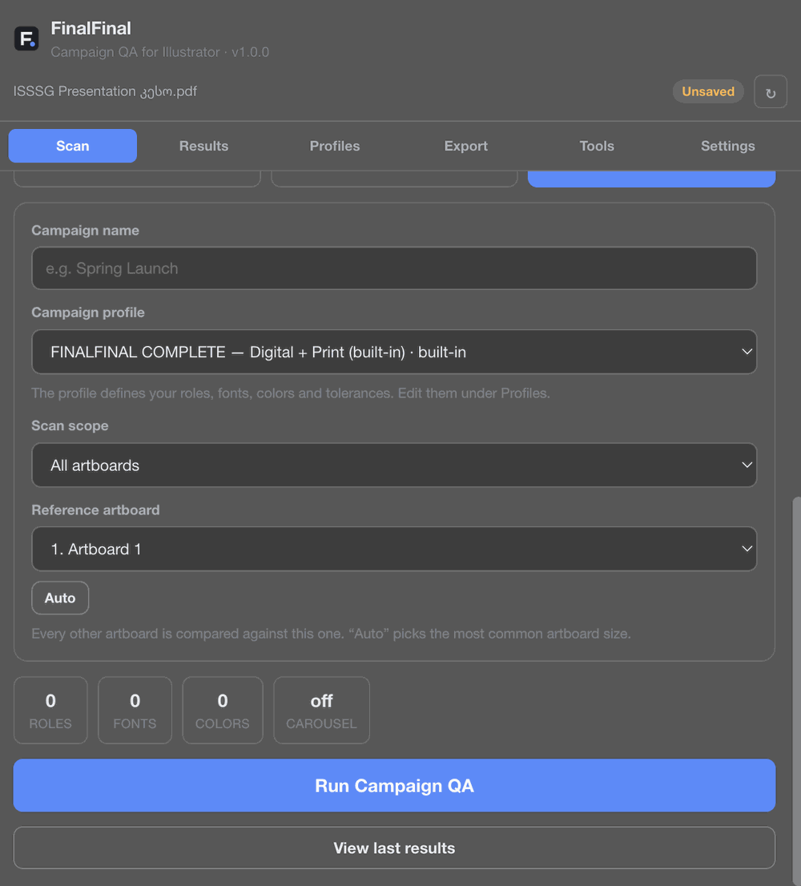
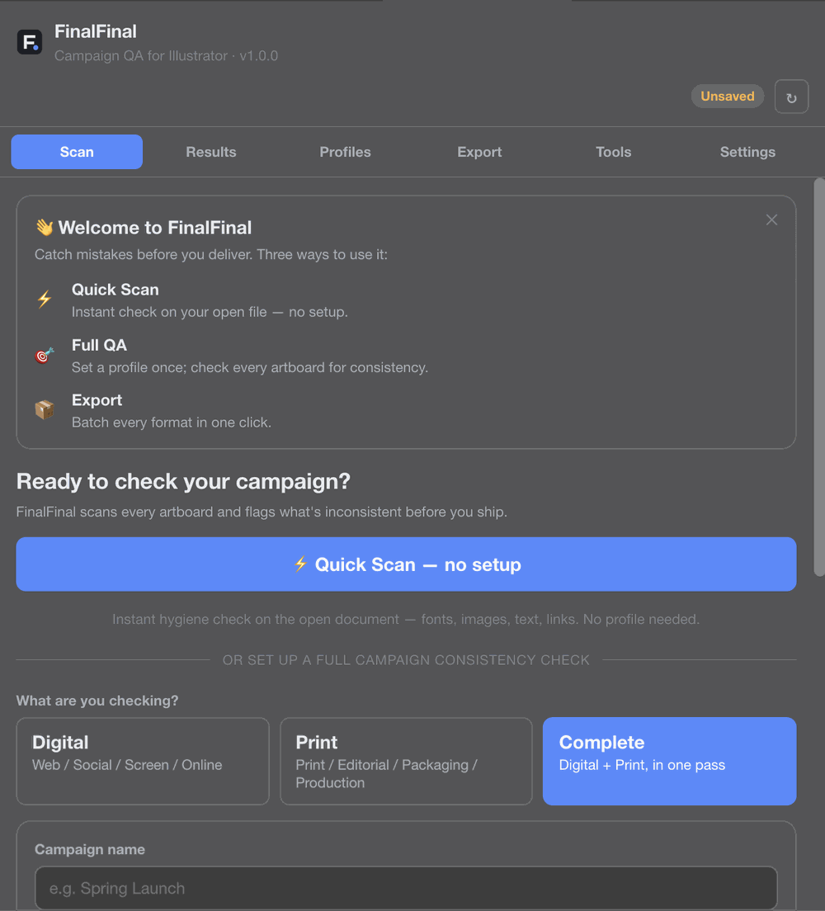
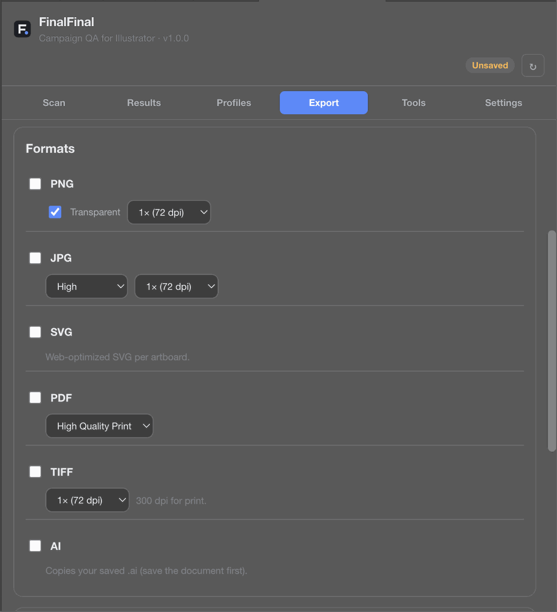
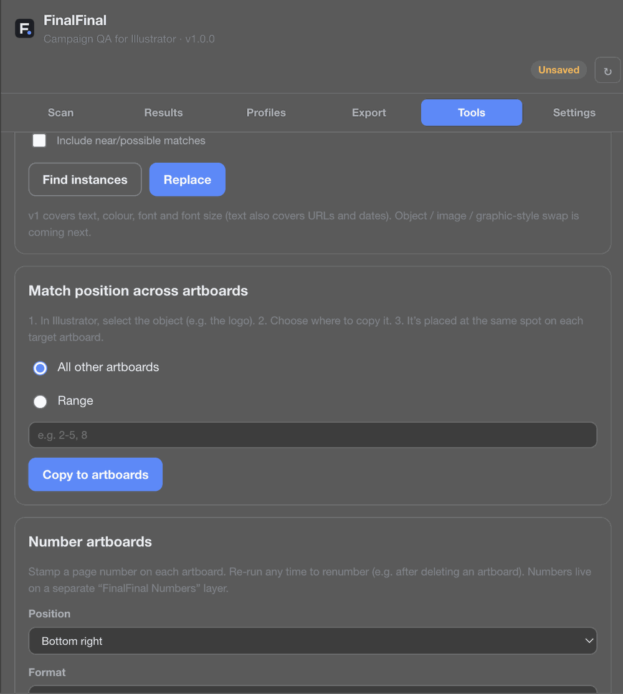

Set up once, scan every artboard
Pick a profile, choose a scan scope, and run the check across the whole campaign in one pass.
Scan every artboard, locate production issues, maintain campaign consistency, and export confidently — all inside Illustrator.

No separate app, no uploading files, no switching windows. FinalFinal is a panel inside Illustrator.

Pick a profile, choose a scan scope, and run the check across the whole campaign in one pass.

PNG, JPG, SVG, PDF, TIFF, and AI — export every format you need without leaving the panel.

Find and replace text, colors, or fonts across every artboard, or match one object's position everywhere.
Digital and print artwork fail for different reasons. FinalFinal checks for the ones that actually matter for your output.
Web, social, screen, and online delivery. Checks color mode, image resolution for screen, links, and layout consistency.
Print, editorial, packaging, and production. Checks color mode, bleed, effective image resolution, and print-specific structure.
Digital and print, in one pass. The full check for teams delivering the same campaign across every channel.
Not a single-artboard sanity check — a QA pass built for files with dozens of artboards, formats, and reviewers.
Whether the file has one artboard or forty, every one gets checked — not just the active one.
Screen-specific and print-specific production rules, run separately or together.
Every issue jumps straight to the object that caused it — no hunting through layers.
Define roles, fonts, colors, and tolerances once, then check every artboard against the same standard.
Resolution, links, typography, color mode, bleed, artboard structure — checked together, not one at a time.
PNG, JPG, SVG, PDF, TIFF, and AI — export every artboard, every format, in one pass.
Everything runs inside Illustrator, on your machine. Nothing is uploaded anywhere.
Fixed something? Re-scan and see exactly what changed since the last pass.
Scanning never touches your artwork. Anything that edits the file asks first, and can be undone with Cmd+Z.
Run an instant Quick Scan with no setup, or set up a Full QA profile with roles, fonts, colors, and tolerances for repeat use.
Pick Digital, Print, or Complete, set the scan scope, and run the check across every artboard.
Jump straight to each flagged object, fix what needs fixing, re-scan to confirm, then batch export.
No. Scanning runs entirely inside Illustrator, on your machine. Your document and artwork are never uploaded to a server. See the Privacy Policy for details.
No. Scanning is read-only and never modifies your file. Some tools (like batch renaming or find-and-replace) do make edits, but only when you explicitly run them — and every one of those actions can be undone with Cmd+Z.
Digital checks what matters for screen and web delivery. Print checks what matters for print production, like color mode and bleed. Complete runs both sets of checks in a single pass.
No QA tool can guarantee that, and FinalFinal doesn't claim to. It's built to catch the issues that come up most often in real campaign files, but you should always review scan results yourself before delivery.
Yes — that's the main use case. FinalFinal is built for campaigns with many artboards and formats, not single-artboard files.
Window → Extensions (Legacy) → FinalFinal — Campaign QA. Full installation and usage steps are on the Help page.
Questions, bugs, or feedback — reach out directly and we'll get back to you.
support@finalfinalqa.com